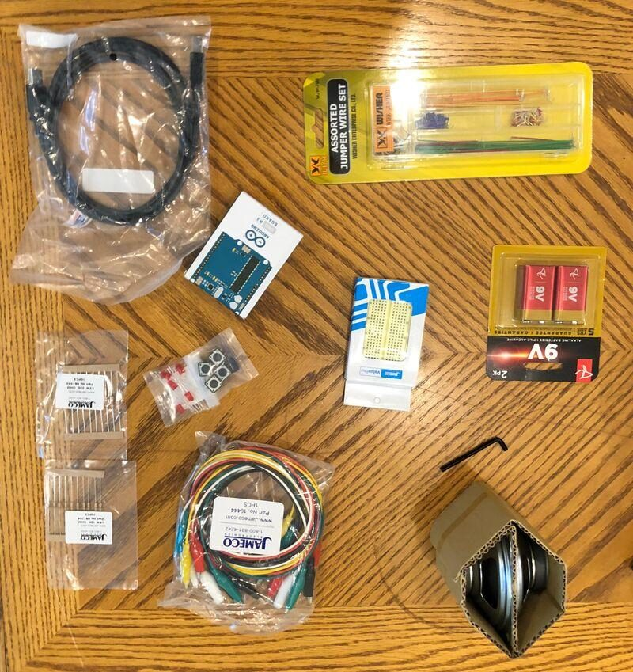
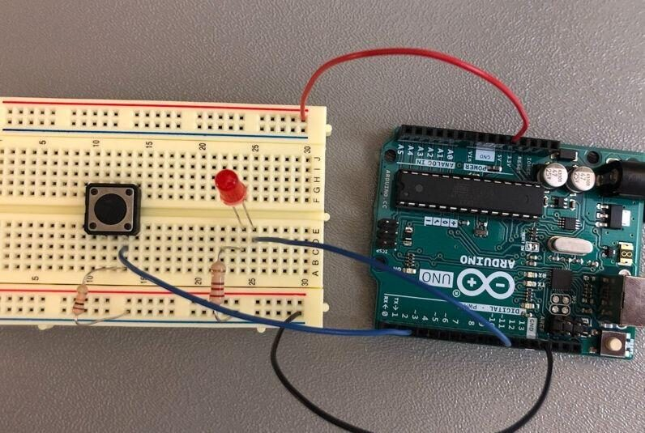
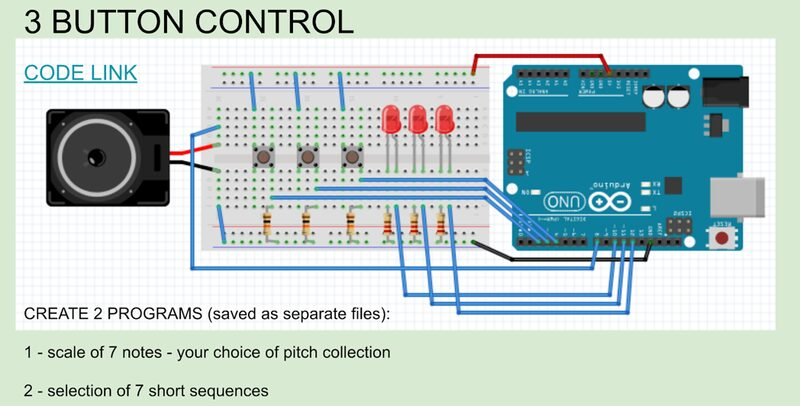
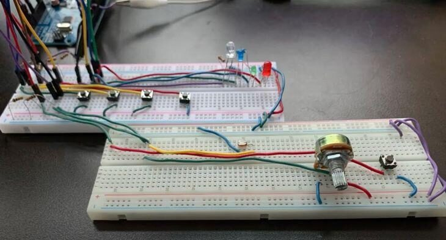
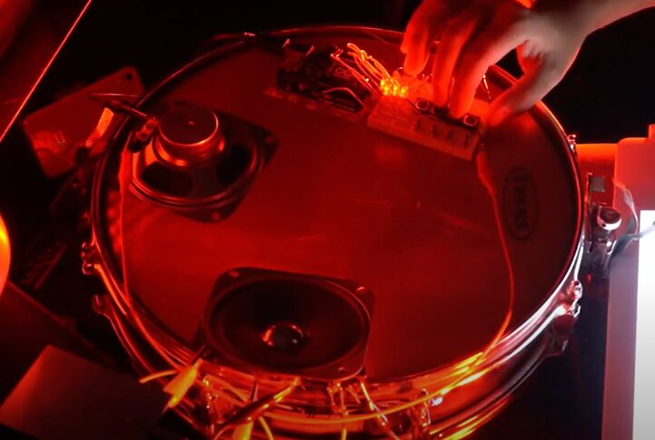
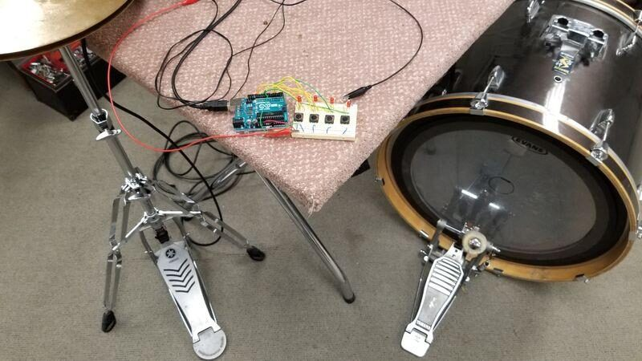
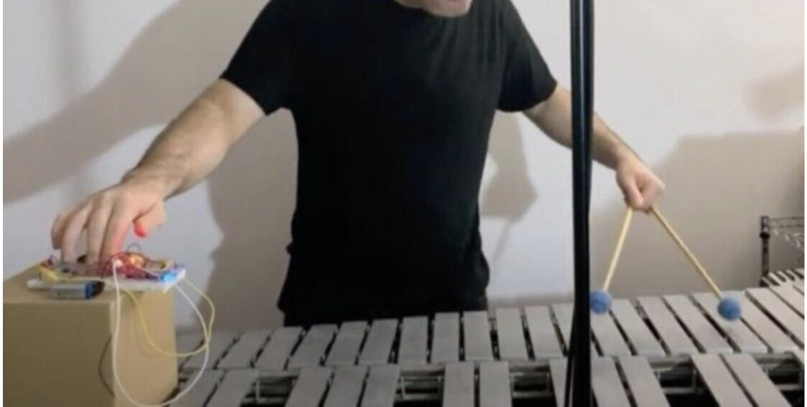
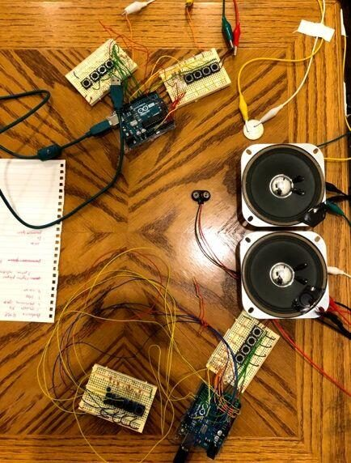
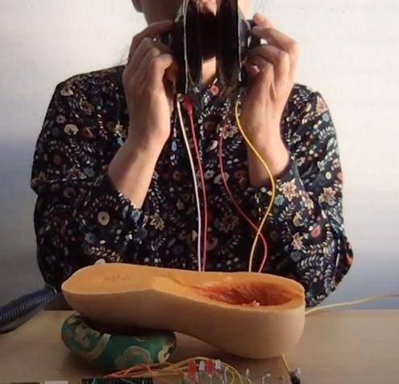

On Parallel Performance Practices: Some Observations on Personalizing DMIs as Percussionists
ABSTRACT
Digital musical instrument (DMI) design and performance is primarily practiced by those with backgrounds in music technology and human-computer interaction. Research on these topics is rarely led by performers, much less by those without backgrounds in technology. In this study, we explore DMI design and performance from the perspective of a singular community of classically-trained percussionists. We use a practiced-based methodology informed by our skillset as percussionists to study how instrumental skills and sensibilities can be incorporated into the personalization of, and performance with, DMIs. We introduced a simple and adaptable digital musical instrument, built using the Arduino Uno, that individuals (percussionists) could personalize and extend in order to improvise, compose and create music (études). Our analysis maps parallel percussion practices emerging from the resultant DMI compositions and performances by examining the functionality of each Arduino instrument through the lens of material-oriented and communication-oriented approaches to interactivity.
Author Keywords
practice-based research, digital musical instrument, performance practice, percussion, music pedagogy, Arduino
CCS Concepts
•Applied computing→Performing arts; Sound and music computing;•Human-centered computing→Interaction design;
1. INTRODUCTION
The proliferation of percussion and electronics constitutes two of Western classical music’s most significant advancements in the twentieth century. As newcomers for musical expression, percussion and electronic music practices are beset by growing pains as questions of standardization and sustainable repertoire development are confronted. Although the integration of live electronics in music performance is a relatively recent development, several generations of technology have already come and gone, leaving artists entering this field with no sustainable platform to work with. In this paper, we examine this issue through a creative experimental workshop to better understand how instrumental performance practice can be extended to include digital musical instruments (DMIs).
The incorporation of technology is emerging as a distinctive feature of contemporary musicians. George Lewis’s performer-based, interactive system Voyager is an early example that investigates the reciprocal, responsive relationship between the computer software and the performer. Mari Kimura’s career as a music technologist and concert violinist has allowed her to develop a system suited to amplify and expand her performance practice. Similarly, percussionist Levy Lorenzo has used his background in both percussion and engineering to develop his unique interactive performance system by remapping a commercially available video-game joystick, enabling him to develop and define the skills of controlling his DMI in a manner similar to playing the drum set.
While these musicians come from diverse music backgrounds, their work has similar goals: to create individualized technical setups that allow for improvisation and develop the interaction between performer and their machine. Their idiosyncratic performance practices reinforce studies that emphasize the impact of one’s background to the process of DMI design [1][2]. This paper expands on previous research in this area by serving as a case study for the integration of DMI design and performance into a single shared instrumental practice.
1.1 DMI Performance Practice
A common area of interest among New Interfaces for Musical Expression (NIME) research concerns how DMIs are useful learning tools for developing musicianship and style [3] [4] [5]. The approaches and designs of these interfaces demonstrate commonalities in how the NIME community thinks about shaping an evolving performance practice. Tomás [3] notes that while students often brought “great artistic ideas” to his DMI design course, the students needed to work on the “adequate use of the body [... and] the artistic conceptualization and the realization of the original idea.” In other words, producing NIME interfaces simultaneously produces performance practice.
Performance practice emerging from the construction of DMIs is a central component to McPherson and Lepri’s research [6]. Their study observed a group of music technologists tasked to construct a system using Pure Data under a set of time restraints. The authors found that “most control relationships fell into just a few categories of sensors manipulating fundamental sonic parameters, [...] usually in a linear, time-invariant, 1-to-1 manner.” In this study, the consciousness of compositional practice is tied to how they build the DMI. Both this study [6] and Tomás [3] indicate how performance practice is produced simultaneously with the construction of the DMI.
1.2 Percussion Performance Practice
Percussion is arguably one of the oldest forms of music making, with rich and diverse traditions around the world [7]. Despite this, the emergence of percussion as a canonical, Western instrument family only emerged in the nineteenth century, and it was not until the twentieth century that the percussion discipline developed its own repertoire [8]. Traditionally, a percussionist’s sonic palette is acoustic and consists of instruments of diverse backgrounds or repurposed everyday objects. Commercially produced electronic percussion instruments, such as the Malletkat and V-Drums, serve primarily as practice instruments and offer utility but are rarely used as the expressive instrument of choice in performance. Incorporation of electronics, a skillset that percussionists have little exposure to in their training, can seem like a burden to musicians that primarily work with acoustic instruments. However, the customization that electronic instruments afford could play a key role in future percussion improvisation and composition [9].
1.3 Practiced-Based Methodology
Practice-based research has been identified as a commonly-used framework to address musical interface design [10]. Draper et al. [11] define practiced-based research as that which “interrogates the authors’ performative processes.” Musicians/researchers Paul Draper, Stephen Emmerson, Vanessa Tomlinson and Andrew Brown use their own works as case studies to reflect and build upon one’s own existing performance practice.
We took a similar approach to this study, constructing it as a creative workshop with emphasis on the artistic outcome as the final goal. Participants were free to expand on their instruments and add components not covered in the workshop. By reviewing the documentation, we analyze the workshop process by employing a methodology loosely based on “grounded theory,” an approach that works well in practice-based research [12][4]. This approach involves generating, encoding, and categorizing data in order to construct a theoretical framework. By treating the workshop as a creative process, participants designed instruments that better reflected their own personal practice.
2. OUR STUDY
Our study was set up as a creative, experimental workshop organized by the Technology and Performance Interactive Research (TaPIR) Lab, which ran between October 3rd and December 3rd, 2020. It was divided into the following: 1) initial workshop, which lasted six hours a day for two days; 2) independent experimentation and composition between October 5th and late November; 3) individual tutorial session of 30 minutes with Lorenzo on November 12th and 19th; 4) live-streamed performance and presentation via YouTube on December 3rd, 2020. After the workshop, the participants submitted documentation of their work and answered an exit questionnaire.
The participants consisted of ten percussionists with an average of 14 years of experience, including one professor, two recent graduates, and seven current graduate students. Current students were paid as research assistants through the research fund. In addition to playing percussion, the participants also play other instruments: piano (7), woodwind (2), string (2), guitar (3), and brass (1). Some participants also compose regularly (5), and the majority of participants improvise regularly (8). The participants had little to no experience designing DMIs.
The goal of the workshop was to use a basic DMI to observe how a percussionist can learn, adapt, improvise, compose, and personalize their setup. In October 2020, Levy Lorenzo, Assistant Professor of Creative Technologies at The New School College of Performing Arts in New York City, led a weekend workshop over Zoom to teach participants (including the authors) how to use an Arduino Uno microcontroller board as a sounding instrument. Lorenzo’s “Beep Lab” instruments are a style of DIY electronics that he regularly performs with and teaches at The New School. The “Arduino prototype” that he taught in this workshop consists primarily of buttons that trigger square wave tones when pressed. Users can program the frequency of the tone and duration, as well as intermittent silence. Users can then program sequences of notes at varying rhythms into a single button. In teaching the basics of Arduino, Lorenzo offered the participants tools to incorporate DMIs into their percussion practice as a means of composition and/or improvisation.


Figure 1: Arduino kit distributed to participants.
The TaPIR Lab mailed each participant a kit that included the Arduino Uno, a breadboard, some buttons, LEDs, resistors, wires, a battery, and two speakers. On the first day of the workshop, Lorenzo explained some of the basic principles of circuitry, demonstrated how to program for Arduino, and had the participants build some simple sounding objects.
The first object was a percussive instrument created with a battery, wires, a speaker and any small metal object. By attaching two wires to the positive and negative ends of the battery, clipping one side to the metal object and placing it on a speaker, and touching the object with the other wire, a rhythmic percussive sound is created. Lorenzo likened this to a percussion instrument, encouraging participants to treat it like they would a drum.


Figure 2: Second sounding object taught by Lorenzo, consisting of a single button and LED. Used with permission from Levy Lorenzo.
The second sounding object was a simplified version of what was to be our Arduino prototype. Through a series of exercises, Lorenzo led the participants through installation of LEDs, buttons, and wires into the breadboard. Lorenzo also gave the participants the code required to program a microcontroller board in Integrated Development Environment (IDE) and explained how to manipulate the code in order to change the pitch, speed, and button assignments. By the end of the first day, participants were able to press a button to create a tone or series of tones that emit from the instrument with a simultaneous flashing LED.


Figure 3: Diagram showing connectivity for three buttons and LEDs. Used with permission from Levy Lorenzo.
On the second day of the workshop, Lorenzo led the participants through the coding and wiring necessary to add buttons to their instrument. By using four buttons, Lorenzo demonstrated that the fifteen possible combinations of button presses can be used to create a fifteen-note chromatic scale.
After affirming that participants had understood the material, Lorenzo began encouraging personalization of the instruments. This included creating custom sequences or note combinations for buttons, changing pitches and speeds, and/or adding components to the breadboard. Lorenzo met with each participant privately for 30 minutes to discuss their thoughts on the instrument and how they wanted to explore it further. The instruments were further developed through personal exploration and an additional meeting with Lorenzo before the final versions were presented on December 3rd. In the following sections, we briefly describe each instrument and/or composition constructed by the participants as well as their experience performing their instrument (A YouTube playlist with excerpts of each étude is available here). Although the participants’ names were publicly available for the concert, for this article we have assigned labels to discuss the participants and their work.
2.1 Participant 1


Figure 5: Setup created and used by Participant 1.
Participant 1 added a potentiometer and photoresistor to the breadboard. By connecting the Arduino instrument through Max to Ableton, they used the additional inputs to manipulate various effects applied to the output. Their étude consisted of shifting arpeggios with washes of delay, reverb, and filter sweeps manipulated by the performer. They described their experience as “playing with electronic Lego.”
2.2 Participant 2


Figure 6: Setup created and used by Participant 2.
Participant 2 incorporated the Arduino into a percussion setup consisting of a snare drum and temple bowls. They triggered looping sequences with the Arduino that they accompanied with percussion sounds, and the hollow interior of the drum was used as a resonator. For Participant 2, the important aspect was “learning to shift one’s thinking into a more scientific/technological manner—instead of thinking of pitch as musicians do (e.g., C, C3, etc.), I was prompted to think of pitch in frequency.”
2.3 Participant 3


Figure 7: Setup created and used by Participant 3.
Participant 3 used their Arduino instrument as an arpeggiator. They mapped four pitches, one to each button, and kept the rhythms consistent so that there was fast rhythmic alternation between the pitches on the buttons when pressed. They combined the Arduino with a hi-hat and kick drum to create a groove-based étude that incorporated polyrhythms. They stated that their compositional “effort went into making sure that the development of the material made sense and was effective.”
2.4 Participant 4


Figure 8: Setup created and used by Participant 4.
Participant 4 used the Arduino instrument to perform an arrangement of Koji Kondo’s video game track “Zelda’s Lullaby” (1991) from the Legend of Zelda franchise. They played the melody on the Arduino instrument with their right hand and vibraphone accompaniment with their left, roles that briefly switched mid-way through the performance. By mounting the Arduino instrument on a cardboard box, Participant 4 could create a sense of vibrato when shaking it with their hand. They wanted to “make something easily digestible and pretty” so they opted for a melody known by video gamers.
2.5 Participant 5

Figure 9: Setup created and used by Participant 5.
Participant 5 added buttons onto the instrument in order to expand the range of possible pitch/rhythm combinations. The two buttons, outlined in Figure 9 in red, control the pitch combinations, while the four buttons outlined in blue correspond to pitch material. Their performance was a structured improvisation that revolved around consistent rhythmic motion. They found “the musical aspects of improvising, composing, and making sound were less satisfying,” but they enjoyed the “interaction between coding and building the circuit.”
2.6 Participants 6, 7, 8, and 9


Figure 10: Setup created and used by Participants 6-9.
Participants 6, 7, 8, and 9 were living together at the time of the workshop, so they opted to work as a group. They added a second breadboard to one Arduino Uno, making for a total of eight buttons. The buttons on one breadboard controlled pitches that blinked on and off at regular intervals, and the buttons on the second breadboard controlled the speed of the pitches. They built a second, similar instrument and performed with one person on each breadboard. The quartet performed a three-part étude featuring different styles. The first part featured a shifting melody-accompaniment relationship between instrument pairs; the second part generated musical ideas using time signature 7/8; the third part explored the instrument’s timbral extremes. Members noted that they wanted to “feature a sense of collaboration” and “create something that took advantage of the seemingly simple interface [Lorenzo] gave us—take something simple and make it far more complex.”
2.7 Participant 10


Figure 11: Setup created and used by Participant 10.
Participant 10 chose to program fixed material: pressing a single button triggered a pre-programmed sequence of tones that lasted the entire performance. The main point of interest for them were the two speakers that came with the Arduino kit. Taking the cue from the limited dynamic control of the Arduino, they used half of a squash and the space surrounding them to amplify and mute speaker’s output. They simultaneously utilized throat singing as a way to amplify and merge with the Arduino tones, additionally noting that subsequent performers of their étude need to “find a way to engage and blend with electronic sounds.”
3. WORKING WITH CONSTRAINTS
Table 1: Summary of How Participants Worked with Constraints
Participant | Additional coding/software | Additional hardware | Button use | Material manipulation |
|---|---|---|---|---|
1 | Max4Live, sensor/pot mapper | knob and photoresistor | Specific |
|
2 | loop() function |
| Specific | Snare drum, loop()glitch |
3 |
|
| Systematic (arpeggiator) |
|
4 |
| Volume knob | Systematic (scale) | Added box for vibrato |
5 |
| 2 extra buttons | Combinatorial |
|
6–9 |
| 2 breadboards per Arduino Uno | Combinatorial | Modulated pitch w. speed |
10 |
|
| Specific | Opened, closed and moved speakers |
The flexibility of the Arduino prototype allowed for a wide range of design and performance possibilities. Unlike research that addresses constraints in DMI design and performance [13] [4], participants in our workshop were not given any physical or technical constraints other than that their final work must incorporate the Arduino prototype in some form. Participants could modify and add to the Arduino setup, use functions not taught in the workshop, and combine their instrument with other instruments and processes. Through analysis of recordings and documentation, we are still able to observe constraints and the participants’ reactions to those constraints in a manner similar to Gurevich et al. [4]. The constraints present in this study consisted mostly of perceived and external constraints: those that were self-imposed by the participants based on their perception of the instrument’s capabilities, and those based on norms according to the “genre of music, performance practice, and social convention” [4]. The perceived constraints of the Arduino prototype were particularly relevant because of the participants’ overall lack of experience with Arduino and customizable electronics. Table 1 summarizes the significant alterations that participants made to the Arduino prototype.
3.1 Finding New Hardware/Software
The amount of time given between workshop and performance allotted ample opportunity for participants to seek out components and functions outside of the scope of the workshop. Participant 2 discovered and used the loop() function as a core part of their composition; others added small components such as knobs and different-colored LEDs. Participant 1 went the furthest with their technical exploration, installing a photoresistor and potentiometer to control various effects through Max4Live.
3.2 Button Mappings
The button mapping used by participants constitute three categories: systematic, combinatorial, and specific. Participants 3 and 4 were systematic in their button mapping in that there was a consistent relationship across all of the button combinations. Participant 3 used their buttons as a simple arpeggiator that assigned one pitch per button, and Participant 4 programmed a diatonic scale that could be played with certain fingerings. Participants 5 and 6–9 used combinatorial mappings: they added extra buttons that modified the original four buttons to create a combination of functions. Participant 5 used the extra two buttons to create four “settings” for a chromatic scale, and Participants 6–9 used the second set of buttons to modify the speed of the pitches played by the first set of buttons. The remaining participants assigned specific mappings to their buttons, opting for mappings customized uniquely for their composition. Participants 1 and 2 programmed the buttons with sequences of varying speeds and pitches to use as source material in their performances. Participant 10 took the sequencing to its extreme, compiling all programming to a single button.
3.3 Material Manipulation
In an effort to go beyond the sound of the square wave, several participants discovered methods to manipulate the timbre of their instruments. Participant 2 used a snare drum as a resonating object for the speaker by taping the speaker face down on the drumhead and also explored programming the loop() function “incorrectly” so that the sound would intermittently freeze. Participants 6–9 discovered that when they programmed the notes to repeat at speeds of 30 milliseconds or faster, the speed modulated the pitch to create a second, simultaneous frequency. Additionally, the participants in the group experimented with disrupting the wiring of one of the instruments: completing the circuit through scratching the wire ends on the face of a coin produced unintended hiccups and glitches in the sound. Participant 10 created volume control by closing one side of the open speaker cone and using their hands to close and open the speakers.
4. CREATIVE AGENCY IN PERCUSSIONIST-CONCEIVED DMIs
Mudd [14] defines communication-oriented and material-oriented perspectives as two approaches that directly address “entanglements of agency” in music and Human-Computer Interaction. The communication-oriented approach implies a sense of transparency in a DMI through which the performer can directly communicate their musical ideas, and the material-oriented approach involves an acknowledgement of the technology itself, that the navigation of material can actually become a source for ideas. These categorizations, while useful, create a polarity that may not accurately represent the full relationship of agency present in music technology. Karen Barad’s concept of “intra-action” [15] is a more holistic take on agency, described by Bowers et al. as “one where agency shifts in the mid-ways between person and thing” [13]. As mentioned by Mudd, “Intra-action steers away from either extreme position—that the technology is dominated by the user, or that the user is dominated by the technology—by questioning the localization of agency within individuals (human or non-human)” [14]. Here, Mudd employs Barad to demonstrate the entanglements of agency in musical interactions. Although the two approaches present a binary view of agency, this theoretical framework nevertheless allows us to map the tendencies of each project in such a way that informs the relationship between musical background and DMI design.
It is important to note that there is a difference in agency between the design process and the creation/performance process. The process of designing the Arduino instruments is inherently a material-oriented one; each participant grappled with the perceived constraints of the Arduino prototype presented through the buttons, coding, square tone, and small speakers. The creative process and the performance of the études themselves, however, are open to more nuanced interpretations between the two categories of interaction. In the following paragraphs, we will discuss the material-oriented and communication-oriented approaches with respect to the participants’ études and performances in order to categorize different approaches for further analysis.
Relatively few participants pursued a communication-oriented approach in their études. For example, only one participant, Participant 4, adopted what would be considered the “idiomatic” approach and mapped individual notes to button combinations to create a scale. Participant 4 performed in a lyrical, expressive manner and incorporated visual gestures (finger vibrato on buttons similar to the ones performed on the violin) resulting in a clear communication of musical expression. Participant 3 instead approached their Arduino instrument rhythmically, playing in a tightly-locked groove with a hi-hat and kick drum. Despite material limitations, the above approaches situate agency in the performer to take on a communication-oriented approach.
The majority of participants adopted the material-oriented approach instead. Participant 2 used the sound emitted from the speaker not only to amplify the sonic result, but also to create vibrato by quickly pushing the speaker down onto the drumhead. Additionally, they took advantage of a glitch of the software itself as a mechanism for timbral expansion. Their investment in the hardware and software demonstrates the material-driven approaches to developing timbral possibilities.
There are, of course, a number of factors at play when considering the prominence of the material-oriented approach. Lepri and McPherson [2] found that material-oriented approaches to design correlate with backgrounds in improvisation and experimental music. The experimental and improvisatory contexts within which this workshop was situated act as external constraints that also significantly influence a participant’s decision to adopt the material-oriented approach. Focusing our discussion around the material exploration in percussion practice, however, allows us to highlight a unique similarity between approaches to percussion and DMI practices.
Participant 10 demonstrates that some approaches are nuanced and can only be placed between the two orientations of material and communication. They manipulated the timbre through the speakers, modifying them so the speakers could be closed and opened like a pair of cymbals. The use of visual gestures simultaneously enacted theatricality in the space around them and created a panning effect. Here, the performance can be interpreted as simultaneously material-oriented and communication-oriented.
5. DISCUSSION
Lepri and McPherson [2] compare “go-between elements” observed between the backgrounds of the participants and the instruments that they designed. Our study reveals a number of go-between elements from percussionist to DMI that reveal the tendencies and preferences of percussionists with respect to DMI design. Contextualizing these through the framework of communication and material-oriented approaches allows for parallels to be drawn between percussion and DMI performance practices.
5.1 Timbral Exploration
The dominance of material-oriented performance in this study might be explained by the centrality of material-oriented approaches in percussion performance practice. Composer Vinko Globokar [16] suggests that there are two opposing philosophies that divide up the percussion world. The first one uses the action of striking as the main concept and designates each instrument a singular timbre while the second one pursues a “differentiated palette of timbres and articulations from the single instrument.” Instead of looking for more instruments to make sounds, one looks for more sounds from the same object. While it is true that other instrumental practices also actively consider timbre, the multiplicity of objects that are considered percussion instruments afford limitless timbral possibilities to the percussionist.
Our results suggest that by exploring either hardware or software, timbral manipulation was a key concept for Participants 2, 4, 6–9, and 10. The investment in hardware to generate performance material was employed by Participants 2, 4, and 10, who each manipulated the speaker in various ways. Participants 2 and 6–9 also exploited glitches in the software as a source of timbral diversity. Each of those participants found ways to go beyond or more deeply explore the sound of the square wave tone.
5.2 Percussion Proficiency
Like all institutionally taught instruments, percussionists learn proficiency on their instrument through a series of standard exercises and repertoire. The snare drum is considered the home instrument to most percussionists as many technical skills are mastered on this instrument [17]. Some basic skills include rudiments (e.g., paradiddle) and rolls (e.g., single, double stroke and buzz) [18]. This training is not only meant to elevate the overall technical ability of the player but also to build precision and consistency in the execution of musical notation and communication of musical ideas.
Technical development is just as important when learning a new DMI [19], as is the case for the participants in this study. The two months between the workshop and performance allowed participants time to develop precision on their personalized instruments. Mechanics such as multi-button combinations need practice to be performed concisely, otherwise the Arduino Uno would not register the action as a single button press. By playing one instrument with each hand, Participant 4 used limb independence, an important technique in percussion practice. Participant 3 also demonstrated independence between hands and feet. Rhythmic precision was an important aspect of the performances by Participant 3 and Participants 6–9: the former demonstrated rhythmic precision as a soloist, whereas the latter employed rhythmic precision in the ensemble setting. In all of these projects, precision was a means to an expressive end; it is intertwined with the communication-oriented approach to performance because it expands the technical (and therefore, expressive) palette of the percussionist.
5.3 Multiple Percussion
Multiple percussion, or multi-percussion, is a term used to “describe a piece of music which requires one percussionist to play more than one instrument” [17]. The participants’ incorporation of the Arduino into personalized setups reflects this paradigm of multi-percussion as an expressive apparatus for the classically-trained percussionist. In addition, there exist several parallels between Arduino instruments and multi-percussion performance. Both are modular and allow for a certain extent of personalization. Multi-percussion setups often incorporate a number of “found sounds” that consist of repurposed everyday objects, resulting in a sonic palette that resembles the aesthetics of Arduino and DIY electronics at large [20].
While Participant 2 used the snare drum in their setup as a way to explore timbre, they also played the drum itself. In this way, the use of the drum can be perceived as indicative of both the material and communication-oriented approaches. Participants 3 and 4 used multi-percussion setups in a more typical fashion, having grouped their Arduino with percussion instruments that either blend with or accompany the two.
6. CONCLUSION
We used a practice-based research methodology to allow the study participants to creatively transfer their percussion skills to learn, play, and compose for their Arduino prototype. Our reflection has allowed us to identify parallel concepts between the learning, design, and performance practice of percussion and DMI. Despite the participants’ limited background with this technology, everyone reported that by the end of the workshop they understood the basics of the Arduino prototype and felt generally comfortable with the technology—an encouraging sign that points to the possibility of incorporating DMIs into percussion practice on a larger scale. This was due in part to the accessibility of Arduino microcontroller boards and software: despite completing this workshop over Zoom, it was easy to put the instruments together by following diagrams and copy-pasting the code.
Bijsterveld and Schulp’s [21] concept of recasting tradition for musical instrument design suggests that successful modifications to the design of classical instruments should be framed as a re-adjustment of tradition. As a relatively young discipline, percussion is more susceptible to this continued molding of tradition. The parallels between the Arduino instruments and percussion practice indicates that recasting percussion tradition by incorporating modular electronics such as Arduino instruments would be feasible. The go-between elements discussed with respect to the workshop also serve to inform future investigations into integrating DMIs and percussion practice. Further research in multiple directions, such as commissioning works for Arduino and percussion and workshops with different groups of instrumentalists, is needed to investigate methods for DMI incorporation into existing practices.
7. Acknowledgements
The authors would like to extend our thanks to Levy Lorenzo for his expertise, Ben Duinker for editing the paper, and Ichiro Fujinaga, Russell Hartenberger and Robin Elliott for their feedback. This study is supported by the Insight Grant Program, Social Sciences and Humanities Research Council (SSHRC) of Canada.
8. Ethics Standards
The participant study described in Section 2 has been approved by the Office of the Vice-President, Research and Innovation, University of Toronto, RIS Human Protocol Number 40523.
Citations
- ↩Sullivan, J., & Wanderley, M. M. (2019). Surveying Digital Musical Instrument Use Across Diverse Communities of Practice. In Proceedings of the International Symposium on Computer Music Multimedia Research. Marseilles, France. Retrieved from http://www-new.idmil.org/publication/surveying-digital-musical-instrument-use-across-diverse-communities-of-practice/
- ↩Lepri, G., & McPherson, A. (2019). Making Up Instruments: Design Fiction for Value Discovery in Communities of Musical Practice. In DIS ’19: Proceedings of the 2019 on Designing Interactive Systems Conference (pp. 113–126). San Diego, USA. https://doi.org/10.1145/3322276.3322353
- ↩Tomás, E. (2020). A Playful Approach to Teaching NIME: Pedagogical Methods from a Practice-Based Perspective. In R. Michon & F. Schroeder (Eds.), Proceedings of the International Conference on New Interfaces for Musical Expression (pp. 143–148). Birmingham, UK: Birmingham City University. Retrieved from https://www.nime.org/proceedings/2020/nime2020_paper28.pdf
- ↩Gurevich, M., Marquez-Borbon, A., & Stapleton, P. (2012). Playing with Constraints: Stylistic Variation with a Simple Electronic Instrument. Computer Music Journal, 36, 23–41. https://doi.org/10.1162/COMJ_a_00103
- ↩Bowers, J., & Archer, P. (2005). Not Hyper, Not Meta, Not Cyber but Infra-Instruments. In Proceedings of the International Conference on New Interfaces for Musical Expression (pp. 5–10). Vancouver, BC, Canada. https://doi.org/10.5281/zenodo.1176713
- ↩McPherson, A., & Lepri, G. (2020). Beholden to our tools: negotiating with technology while sketching digital instruments. In R. Michon & F. Schroeder (Eds.), Proceedings of the International Conference on New Interfaces for Musical Expression (pp. 434–439). Birmingham, UK: Birmingham City University. Retrieved from https://www.nime.org/proceedings/2020/nime2020_paper84.pdf
- ↩Moersch, W. (2016). Marimba revolution: Mallet instruments, repertoire, and technique in the twenty-first century. In R. Hartenberger (Ed.), The Cambridge Companion to Percussion (pp. 43–54). Cambridge University Press.
- ↩Sliwinski, A. (2016). Lost and found: Percussion chamber music and the modern age. In R. Hartenberger (Ed.), The Cambridge Companion to Percussion (pp. 97–115). Cambridge University Press.
- ↩Bierstone, N. (2020). Integrating Performer-Controlled Electronics in a Post-Percussive Practice.
- ↩Marquez-Borbon, A., Gurevich, M., Fyans, A. C., & Stapleton, P. (2011). Designing Digital Musical Interactions in Experimental Contexts. In Proceedings of the International Conference on New Interfaces for Musical Expression (pp. 373–376). Oslo, Norway. https://doi.org/10.5281/zenodo.1178099
- ↩Draper, P., Emmerson, S., Tomlinson, V., & Brown, A. (2015). What were we thinking? Reflections on three artistic research projects from Australia. In (Re-)processing Research: Musical practice as both source and target domain for artistic research in music. Graz, Austria. Retrieved from https://www.researchgate.net/publication/292612224_What_were_we_thinking_Reflections_on_three_artistic_research_projects_from_Australia
- ↩Johnston, A. (2011). Beyond Evaluation : Linking Practice and Theory in New Musical Interface Design. In Proceedings of the International Conference on New Interfaces for Musical Expression (pp. 280–283). Oslo, Norway. https://doi.org/10.5281/zenodo.1178053
- ↩Bowers, J., Richards, J., Shaw, T., Frieze, J., Freeth, B., Topley, S., … Rui, L. (2016). One Knob To Rule Them All: Reductionist Interfaces for Expansionist Research. In Proceedings of the International Conference on New Interfaces for Musical Expression (Vol. 16, pp. 433–438). Brisbane, Australia: Queensland Conservatorium Griffith University. https://doi.org/10.5281/zenodo.1175996
- ↩Mudd, T. (2019). Material-Oriented Musical Interactions. In S. Holland, T. Mudd, K. Wilkie-McKenna, A. McPherson, & M. M. Wanderley (Eds.), New Directions in Music and Human-Computer Interaction (pp. 123–133). Cham: Springer International Publishing. https://doi.org/10.1007/978-3-319-92069-6_8
- ↩Barad, K. (2007). Meeting the Universe Halfway: Quantum Physics and the Entanglement of Matter and Meaning. Duke University Press. https://doi.org/10.1215/9780822388128
- ↩Globokar, V. (1992). Anti-Badabum. Percussive Notes, 31(1), 77–82.
- ↩Engelman, R. (1992). Percussionists in the West - Coping with Change. Contemporary Music Review, 7, 5–13. https://doi.org/10.1080/07494469200640191
- ↩Blades, J. (1975). The World of Percussion. Journal of the Royal Society of Arts, 123(5228), 504–509.
- ↩Oore, S. (2005). Learning Advanced Skills on New Instruments. In Proceedings of the International Conference on New Interfaces for Musical Expression (pp. 60–64). Vancouver, BC, Canada. https://doi.org/10.5281/zenodo.1176794
- ↩Richards, J. (2013). Beyond DIY in electronic music. Organised Sound, 18. https://doi.org/10.1017/S1355771813000241
- ↩Bijsterveld, K. (2004). Breaking into a World of Perfection: Innovation in Today’s Classical Musical Instruments. Social Studies of Science, 34, 649–674. https://doi.org/10.1177/0306312704047171